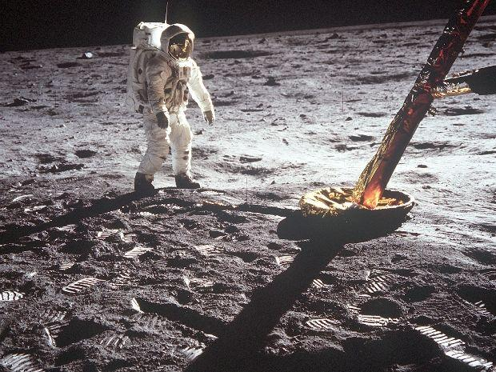
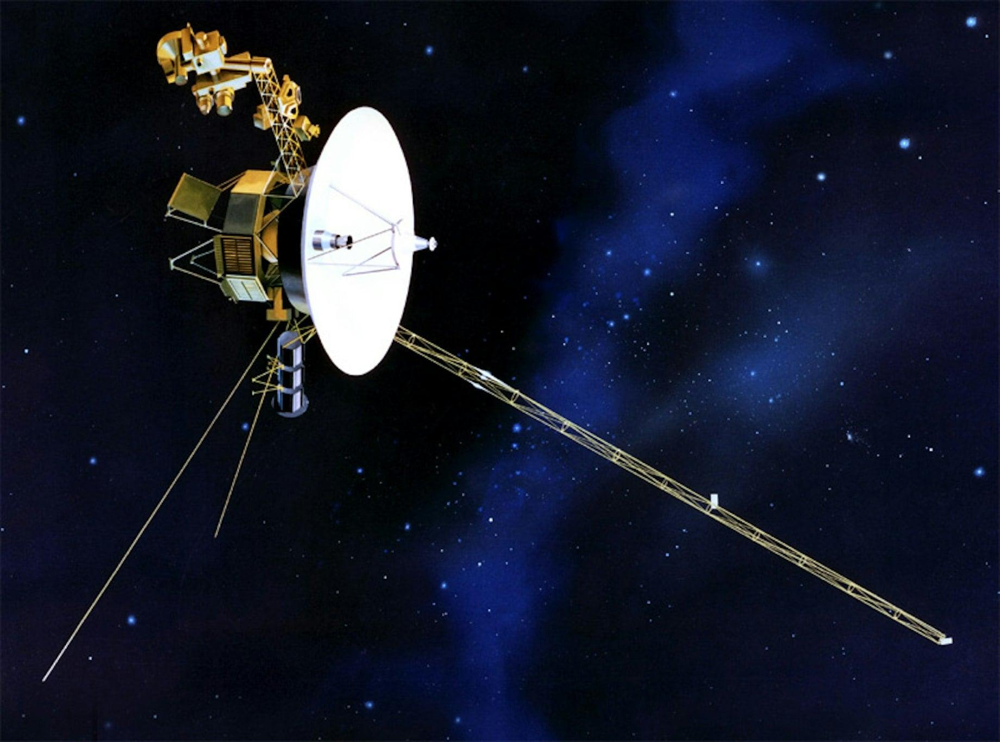
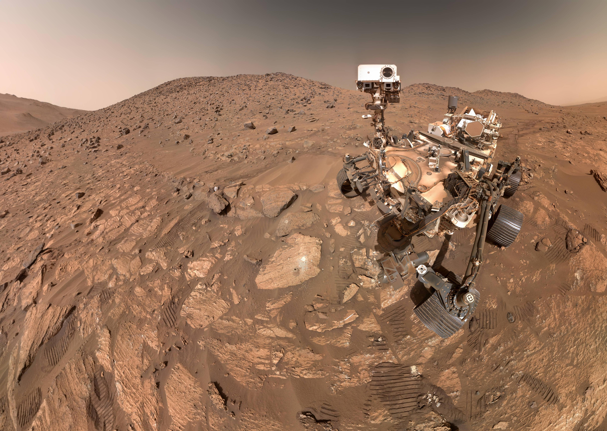
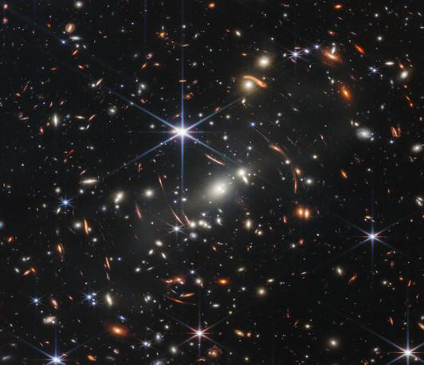

Apollo 11 (1969)
Apollo 11 var den første romferden som landet mennesker på månen. Neil Armstrong og Buzz Aldrin gikk på månens overflate, mens Michael Collins ventet i bane. Oppdraget ble en viktig milepæl i romfartens historie.

Apollo 11 var den første romferden som landet mennesker på månen. Neil Armstrong og Buzz Aldrin gikk på månens overflate, mens Michael Collins ventet i bane. Oppdraget ble en viktig milepæl i romfartens historie.

Voyager 1 ble sendt opp i 1977 for å undersøke Jupiter og Saturn. Etter å ha besøkt planetene fortsatte romsonden utover i verdensrommet. I 2012 nådde den det interstellare rommet.

Perseverance landet på Mars i februar 2021. Roveren undersøker steiner og jord for å finne spor etter miljøer der liv kan ha eksistert tidligere. Den samler også inn prøver for videre forskning.

James Webb er et romteleskop som observerer universet med infrarødt lys. Det gjør det mulig å studere fjerne galakser, stjerner og atmosfærene til planeter utenfor solsystemet.